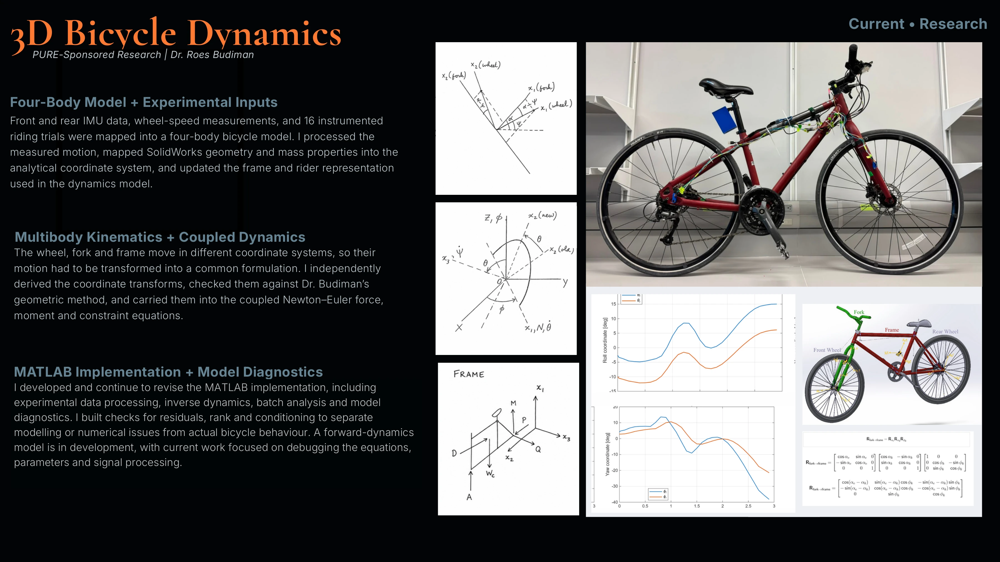

Current • Research
PURE-Sponsored Research | Dr. Roes Budiman
Front and rear IMU data, wheel-speed measurements, and 16 instrumented riding trials were mapped into a four-body bicycle model. I processed the measured motion, mapped SolidWorks geometry and mass properties into the analytical coordinate system, and updated the frame and rider representation used in the dynamics model.
The wheel, fork and frame move in different coordinate systems, so their motion had to be transformed into a common formulation. I independently derived the coordinate transforms, checked them against Dr. Budiman’s geometric method, and carried them into the coupled Newton–Euler force, moment and constraint equations.
I developed and continue to revise the MATLAB implementation, including experimental data processing, inverse dynamics, batch analysis and model diagnostics. I built checks for residuals, rank and conditioning to separate modelling or numerical issues from actual bicycle behaviour. A forward-dynamics model is in development, with current work focused on debugging the equations, parameters and signal processing.
Continue scrolling for technical detail